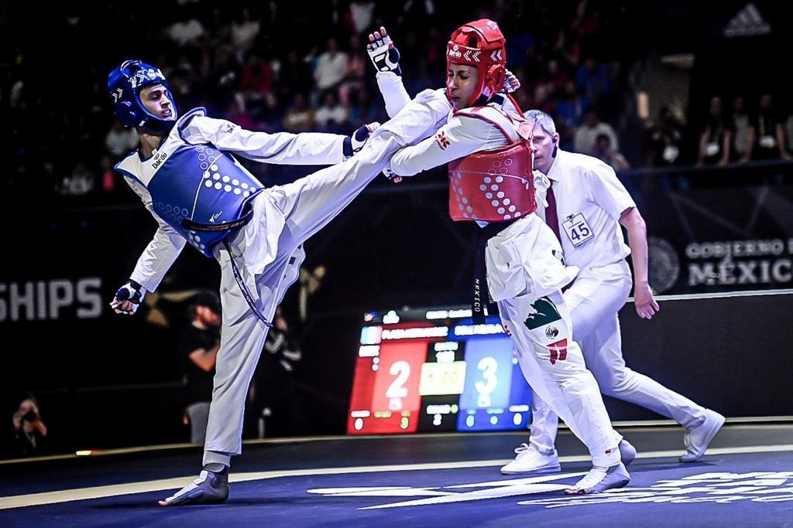
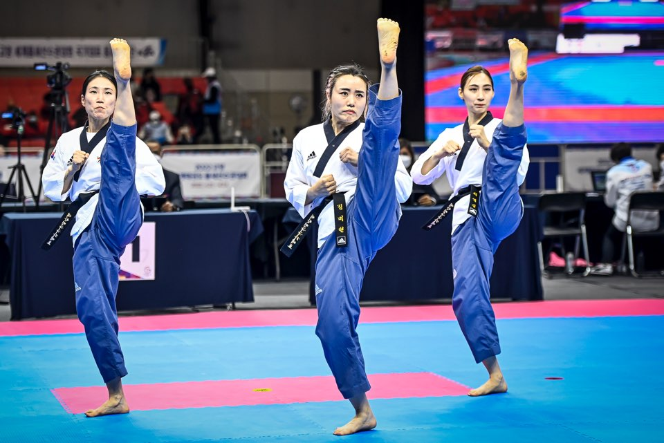
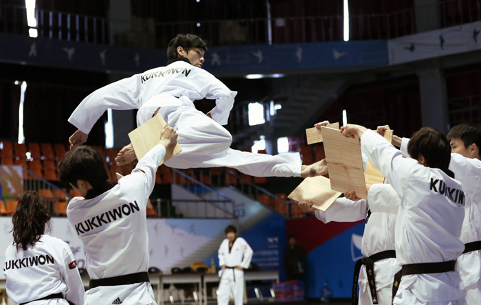

Sparring, Forms, & Board Breaking



What is Kukkiwon and why is it important?
I dedicated more than a decade of continuous practice before retiring during the COVID-19 pandemic. Moreover, the Kukkiwon certification of a Dan [black belt] level proves that the holder has proficient knowledge and understanding of Taekwondo. In addition, Kukkiwon is the world governing body of Taekwondo based in South Korea founded in 1972 that certifies Dan holders internationally. World Taekwondo (WT) and Kukkiwon work in unison to ensure the quality and authenticity of fair competition.
What is World Taekwondo (WT)?
World Taekwondo is an organization that oversees major taekwondo competitions across the globe. Furthermore, it also provides guidance and governance for Taekwondo practitioners internationally, established in 1973 in South Korea.